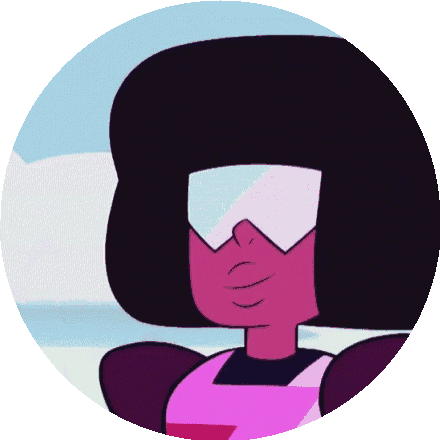

Poucos sabem, mas Garnet é uma fusão. Duas gemas apaixonadas,Rubi e Safira se fundiram por amor incondicional, e vivem uma vida em uma forma que representa seus sentimentos. Apesar de duas gemas diferentes não poderem se fundir de acordo com as regras da ditadura da Terra Natal, Garnet encontrou na Terra um lugar onde ela teve liberdade para agir livremente. Porém, por conta de uma discussão interna entre as duas, elas se separam e tomam sua forma original. Neste momento, a pedra de Rose age no quarto da Garnet, materializando assim a imgagem da tão temida ditadora Diamante Amarelo, que começa a julgar os sentimentos ali estabelecidos, dizendo que aquilo era absolutamente proibido. Nesse momento:

A-Ruby e Safira continuam discutindo entre si
B-Ruby e Safira se desesperam e correm
C-Ruby e Safira mantêm a calma para lidar com a Diamante